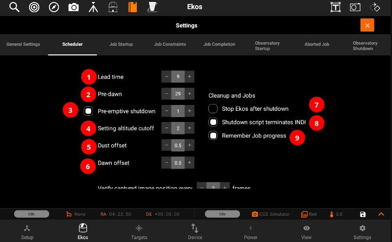
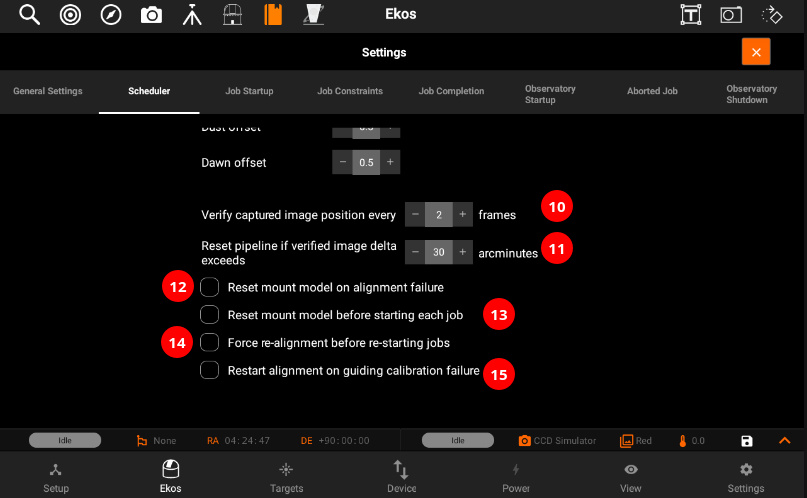

Settings

- Target name: Target designation is automatically filled. It can be adjusted manually..
- Target Selector: Search for targets by category and name. Targets can be also selected from the Targets tab when Ekos is offline.
- J2000: RA and DEC are displayed of a specific target.
- Sequence File: Sequence: A sequence file describes the required settings for each batch of images. Create a sequence file in the Capture module and save it for later. You can select the file using Directory browser.
- Settings: Contains all of the settings of Scheduler module.
- General Settings:
- Optional FITS file: If a FITS file is specified, the astrometry solver shall solve the file and use the central RA/DEC as the target coordinates. You can select the file using Directory browser.
- Removes selected FITS file.
- Profile: Select which equipment profile to utilize when starting Ekos. If Ekos & INDI are already started and online, this selection is ignored.
- Steps: Each job goes through a sequence of discrete steps. Each step or stage can be toggled on or off as desired:
- Track: Mount is commanded to slew to target.
- Focus: Camera auto-focus (if applicable) is started.
- Align: Plate-solving is performed to ensure the correct location, framing and orientation of the target is met. If a FITS file is specified in General Settings, then this file is first plate-solved and then mount is commanded to to slew to target solution coordinates. This is followed by another plate-solving process to ensure we are within tolerance at the target solution coordinates. If the position angle of the FITS image is different from the current camera orientation, the camera orientation can be automatically adjusted if a mechanized rotator is detected. Otherwise, a manual camera rotation is required until the image position angle is satisfied.
- Guide: Using a guide camera, the mount tracking is locked to a guide star to enable long-exposure astrophotography
- Position Angle: Select the desired Sky Position Angle in degrees (East of North). Ignore this setting to image using the camera current position angle. Use Target tab Framing Assistant tool to visually adjust the field of view until the desired orientation is achieved.on angle: You can also specify and position angle.
- Scheduler

- Lead time is the minimum time in minutes between jobs. The scheduler starts execution of a job before its scheduled startup time by this lead time. Early execution is useful as focusing, alignment, and guiding procedures may take prolonged periods to time to complete.
- Do not permit jobs to be scheduled or executed past this many minutes before dawn.
- In case no scheduler job is scheduled for this many hours, perform a complete shutdown procedure and restart observatory operations once the next job is ready.
- Do not permit jobs to be scheduled less than this many degrees before the altitude restriction. Actual execution proceeds until the altitude limit.
- Offset astronomical dusk by this many hours. This positive or negative value adjusts the twilight restriction.
- Offset astronomical dawn by this many hours. This positive or negative value adjusts the twilight restriction.
- After shutdown procedure is successfully executed, stop INDI and Ekos.
- If the shutdown script terminates INDI server, enable this option so that no disconnection errors are generated.
- When processing a scheduled job, resume the sequence starting from the last image present in storage.

- When calculating position after captures, compute it every Nth capture. Set to 0 to disable.
- If captured position exceeds target position by more this many arcminutes, abort capture and reschedule the pipeline.
- Reset mount model on alignment failure
- Reset mount model before starting each job
- If Align is enabled, scheduler would initiate a realignment procedure before restarting any jobs even if guiding is active.
- If guiding calibration fails then restart alignment process before proceeding to guiding recalibration process again. This can help recenter the target object in the field of view if the calibration process strayed too far off.
- Job Startup
- Culmination Offset: Start the observation job when the object reaches culmination adjusted for the offset value in minutes. By default, the observation job runs 60 minutes prior to culmination.
- ON: Start the job on the specified date and time.
- ASAP: Start the observation job as soon as all the constraints, if any, are met. The best candidate target shall be imaged first.
- Algorithm:
- Classic: Start jobs that meet the constraints by priority and score.
- Greedy: Always attempt to run a job. It picks the highest priority job that can run according to its constraints. It will interrupt running jobs if a higher priority job can run.
- Job Constraints:
- Alt: The object's altitude must remain equal or higher than the given value.
- Moon: The moon separation must remain equal to or higher than the given value.
- Weather: Weather conditions must remain safe. When weather conditions become dangerous, shutdown procedure is initiated.
- Twilight: The twilight restriction constraints jobs to execute in astronomical darkness. Use the dusk and dawn offsets in the Ekos Scheduler options to adjust the interval.
- Artificial Horizon: The A.H restriction constrains the attitude of the target to be above the artificial horizon. If any are defined and enabled. See the artificial horizon item in the KStars Settings menu.
- Job Completion:
- Sequence Completion: The observation job is completed when the sequence is complete.
- Repeat for: No. of times sequence will repeat.
- Repeat until terminated: Restart the sequence job indefinitely.
- Repeat until: Terminate the job on given date and time.
- Observatory Startup:
- UnPark dome: Park dome to home position
- UnPark Mount: Park telescope to home position.
- Uncap: Open dust cover.
- Script: One time startup procedure to be executed before starting Ekos. The script is executed before the startup procedures (i.e Unpark scope), if Selected, are executed.
- Aborted Job:
- None: Do not reschedule aborted jobs.
- Queue: Reschedule aborted jobs as soon as all executable jobs are either completed or aborted.
- Immediate: Reschedule an aborted job immediately.
- Reschedule errors: Treat errors like aborts. (Delay in seconds).
- Observatory shutdown Procedure:
- For more complex observatory environments, there are usually predefined custom procedures to be executed to prepare the observatory for imaging, and another set of procedures on shutdown. The user may plan to image one or more targets during the night, and expects data to be ready by morning.
- Warm CC: Turn off CCD cooler.
- Cap: Close dust cover.
- Park Mount: Park telescope to home position.
- Park Dome: Park dome to home position.
- Script: One-time shutdown procedure to be executed after all Scheduler jobs are completed. The script is executed after the shutdown procedure (i.e Parking), If selected, are completed.
You can also swap the jobs priority by moving the Jobs to Up/Down


You must select the Target and Sequence before you can add a job to the Scheduler. When the scheduler starts, it evaluates all jobs in accord to the conditions and constraints specified and attempts to select the best job to execute. Selection of the job depends on a simple heuristic algorithm that scores each job given the conditions and constraints, each of which is weighted accordingly.